Soru 1Cevap: C
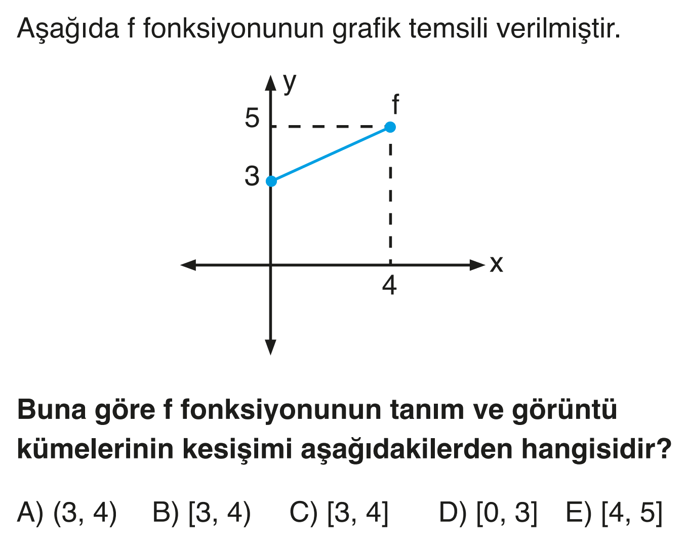
Çözüm
- Doğru parçası $x=0$'dan $x=4$'e: tanım kümesi $[0,4]$.
- $y$ değerleri $3$'ten $5$'e: görüntü kümesi $[3,5]$.
- Kesişim $[3,4]$ (C).
Cevap: C
Soru 2Cevap: E
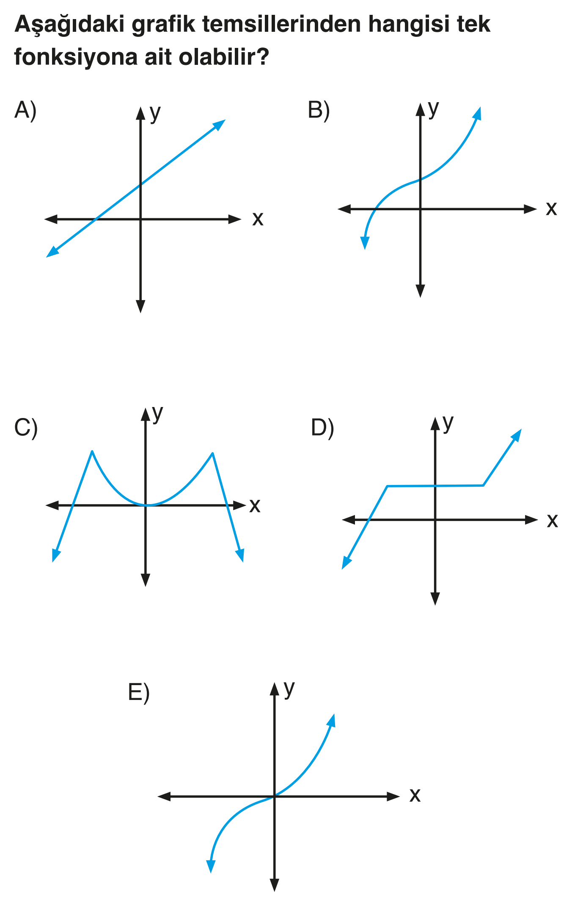
Çözüm
- Tek fonksiyon orijinden geçer ve orijine göre simetriktir.
- A ve B orijinden geçmiyor, C çift, D'nin parçaları simetrik değil.
- E orijine göre simetriktir: cevap E.
Cevap: E
Soru 3Cevap: C
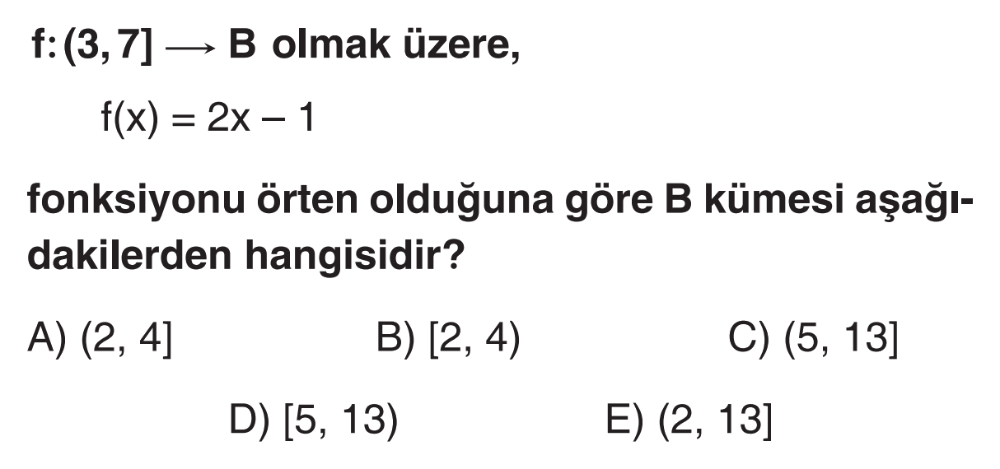
Çözüm
- Örtenlikte $B$ görüntü kümesine eşit olmalı.
- $f(x)=2x-1$ artan; $x\in(3,7)\Rightarrow f(x)\in(5,13)$.
- $B=(5,13)$ (C).
Cevap: C
Soru 4Cevap: B
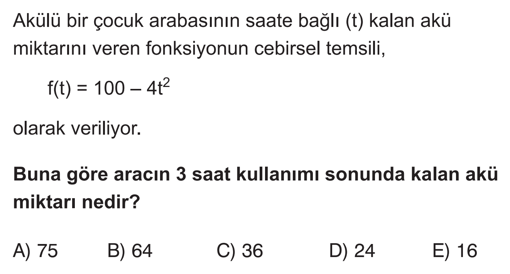
Çözüm
- Kalan akü $f(t)=100-4t^2$.
- $t=3$ için $4\cdot 9=36$.
- $100-36=64$ (B).
Cevap: B
Soru 5Cevap: E
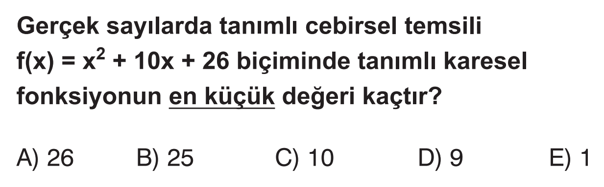
Çözüm
- $x^2+10x+26=(x+5)^2+1$.
- $(x+5)^2\ge0$.
- En küçük değer $1$ (E).
Cevap: E
Soru 6Cevap: E
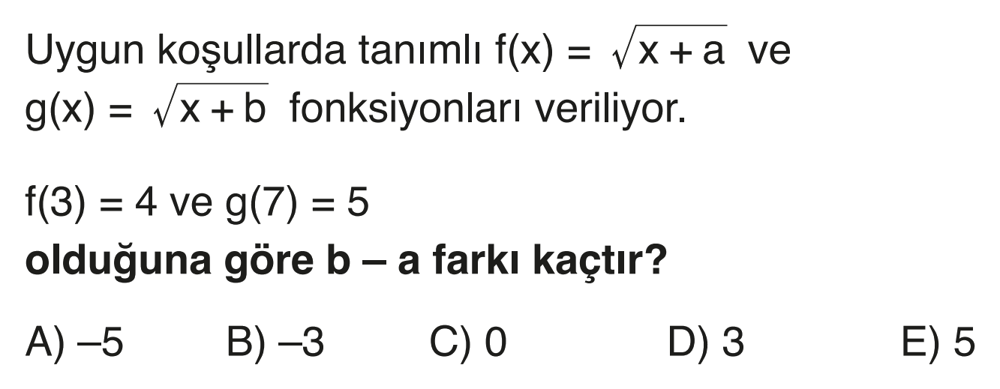
Çözüm
- $f(3)=\sqrt{3+a}=4\Rightarrow a=13$.
- $g(7)=\sqrt{7+b}=5\Rightarrow b=18$.
- $b-a=5$ (E).
Cevap: E
Soru 7Cevap: C
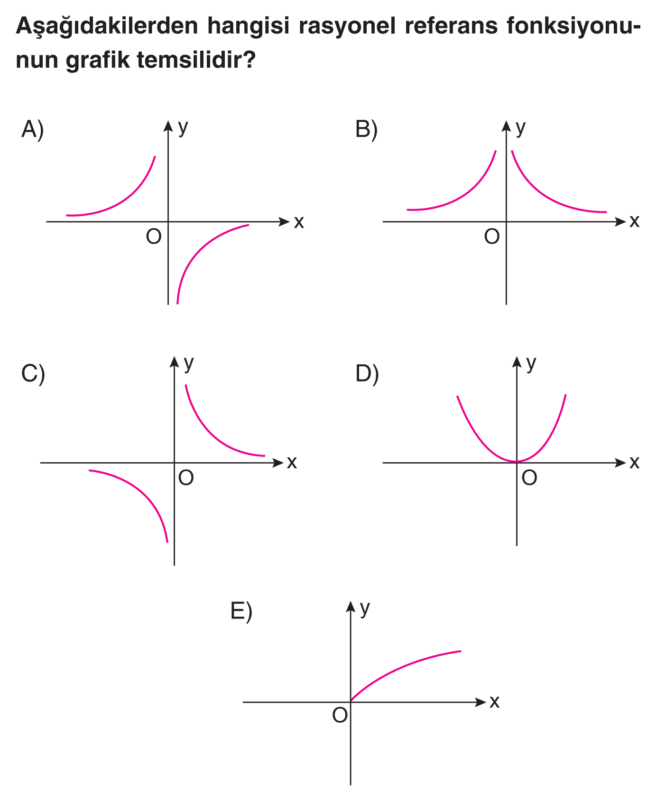
Çözüm
- $\dfrac1x$'in asimptotları koordinat eksenleridir.
- $x\gt0$ için pozitif, $x\lt0$ için negatif: kollar I. ve III. bölgede.
- Bu grafik C'dir.
Cevap: C
Soru 8Cevap: E
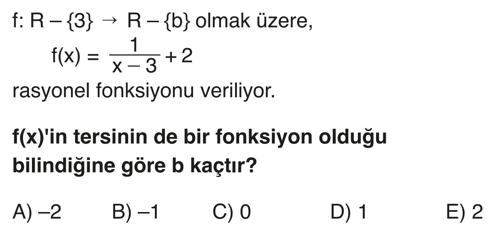
Çözüm
- Tersin fonksiyon olması için $f$ bire bir ve örten olmalı.
- $\dfrac1{x-3}\ne0$ olduğundan $f(x)$, $2$ değerini hiç almaz.
- Değer kümesi $\mathbb R-\{2\}$ olmalı: $b=2$ (E).
Cevap: E
Soru 9Cevap: A
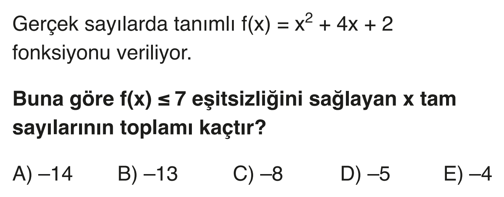
Çözüm
- $x^2+4x+2\le7\Rightarrow x^2+4x-5\le0$.
- $(x+5)(x-1)\le0\Rightarrow-5\le x\le1$.
- Tam sayıların toplamı $-5-4-3-2-1+0+1=-14$ (A).
Cevap: A
Soru 10Cevap: E
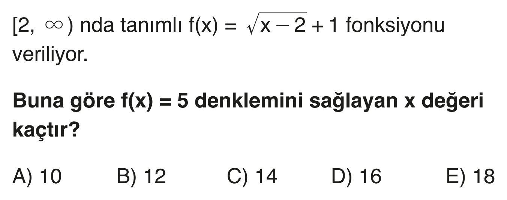
Çözüm
- $\sqrt{x-2}+1=5\Rightarrow\sqrt{x-2}=4$.
- $x-2=16$.
- $x=18$ (E).
Cevap: E
Soru 11Cevap: E
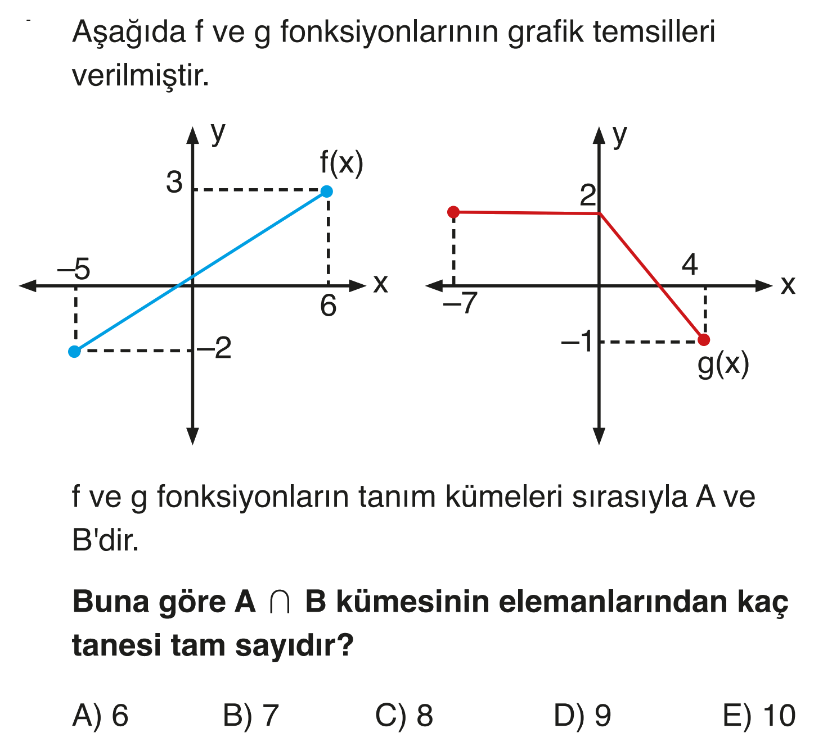
Çözüm
- $f$ grafiği $x=-5$'ten $x=6$'ya: $A=[-5,6]$.
- $g$ grafiği $x=-7$'den $x=4$'e: $B=[-7,4]$.
- $A\cap B=[-5,4]$: tam sayılar $-5,\dots,4$, yani $10$ tane (E).
Cevap: E
Soru 12Cevap: E
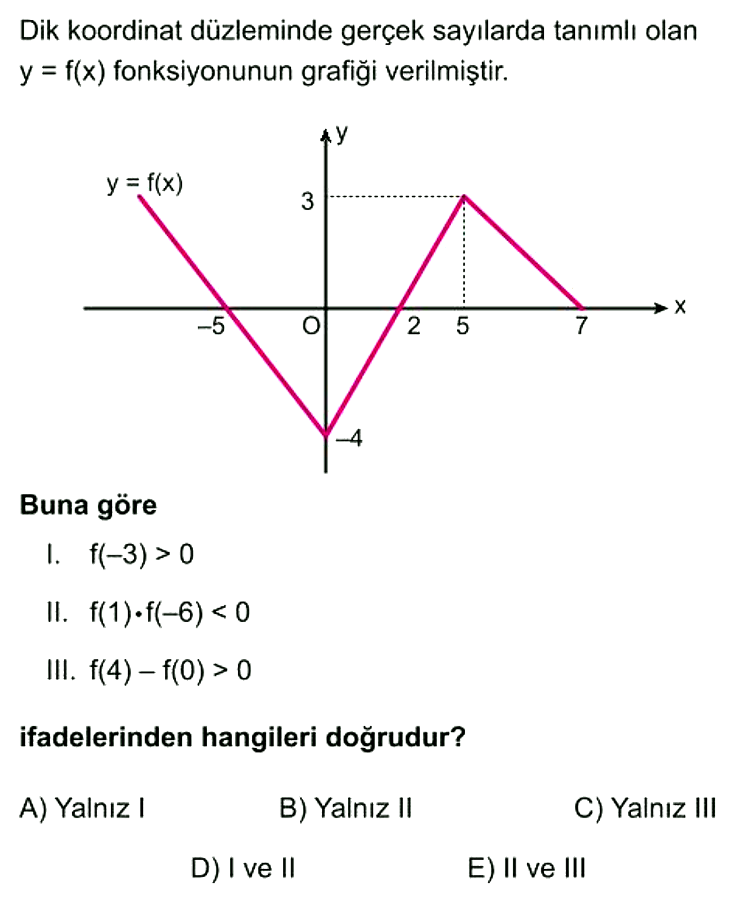
Çözüm
- Grafik $(-5,2)$ aralığında eksenin altında: $f(-3)\lt0$, I yanlış.
- $f(1)\lt0$, $f(-6)\gt0$: çarpım negatif, II doğru.
- $f(4)\gt0$, $f(0)=-4$: $f(4)-f(0)\gt0$, III doğru. Cevap E.
Cevap: E
Soru 13Cevap: B
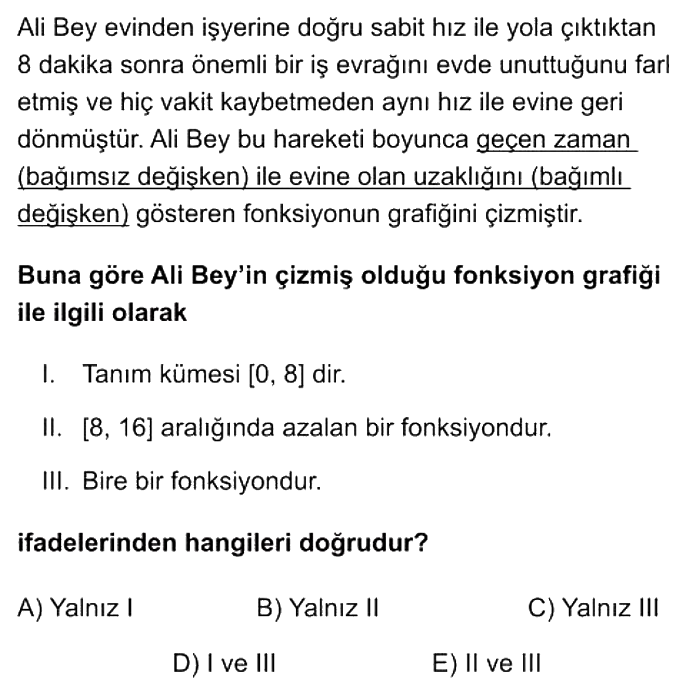
Çözüm
- Ali Bey $8$ dakika gidip aynı hızla döndüğünden dönüş de $8$ dakika: tanım kümesi $[0,16]$, I yanlış.
- $[8,16]$'da eve yaklaşıyor: uzaklık azalıyor, II doğru.
- Gidişte ve dönüşte aynı uzaklıklar tekrar alınır: bire bir değil, III yanlış. Cevap B.
Cevap: B
Soru 14Cevap: E
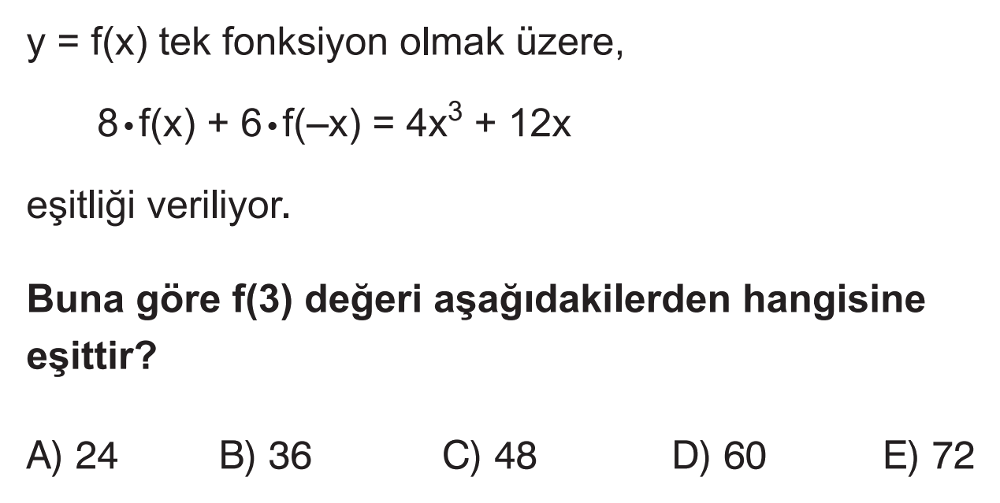
Çözüm
- $f$ tek ise $f(-x)=-f(x)$.
- $8f(x)-6f(x)=2f(x)=4x^3+12x\Rightarrow f(x)=2x^3+6x$.
- $f(3)=54+18=72$ (E).
Cevap: E
Soru 15Cevap: B
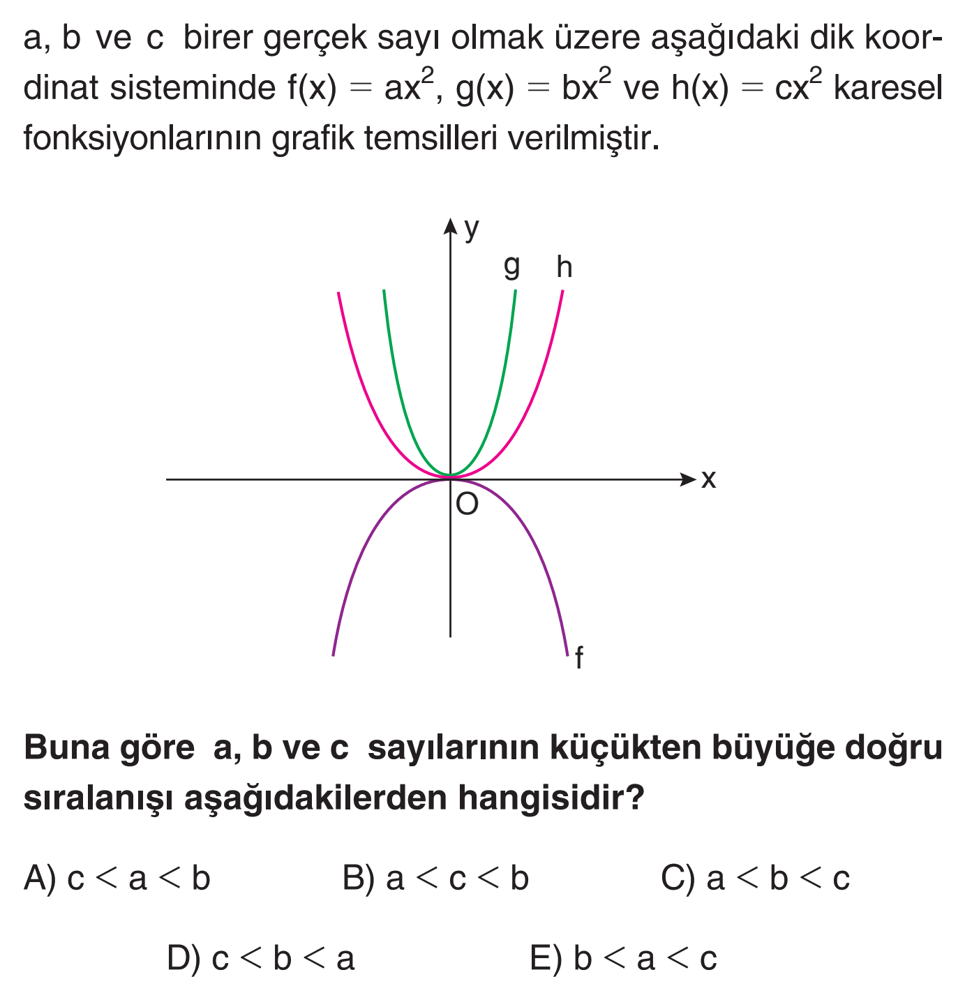
Çözüm
- $f$'nin kolları aşağı: $a\lt0$.
- $g$ ve $h$ yukarı açık: $b,c\gt0$; $|a|$ büyüdükçe kollar daralır.
- $g$, $h$'den dar: $b\gt c$. Sıralama $a\lt c\lt b$ (B).
Cevap: B
Soru 16Cevap: E
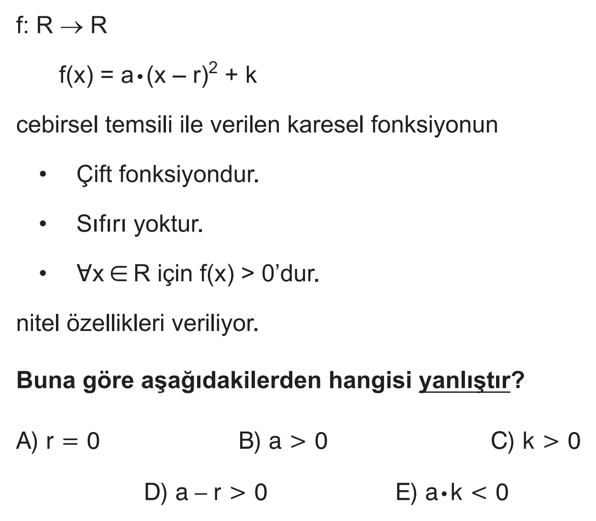
Çözüm
- Çift olması için simetri ekseni $y$ ekseni: $r=0$ (A doğru).
- Sıfırı yok ve hep pozitif: kollar yukarı ($a\gt0$) ve tepe ekseninin üstünde ($k\gt0$); B, C, D doğru.
- $a\gt0$, $k\gt0\Rightarrow a\cdot k\gt0$: yanlış olan E.
Cevap: E
Soru 17Cevap: B
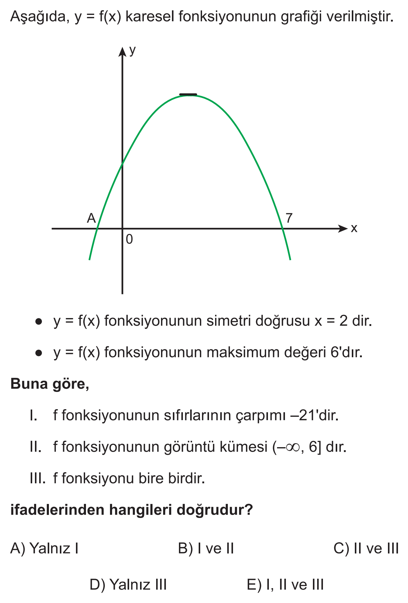
Çözüm
- Simetri doğrusu $x=2$; sıfırlardan biri $7$, diğeri $2\cdot2-7=-3$.
- Sıfırların çarpımı $-21$ (I doğru); en büyük değer $6$: görüntü $(-\infty,6]$ (II doğru).
- $f(2-t)=f(2+t)$ olduğundan bire bir değil (III yanlış). Cevap B.
Cevap: B
Soru 18Cevap: C
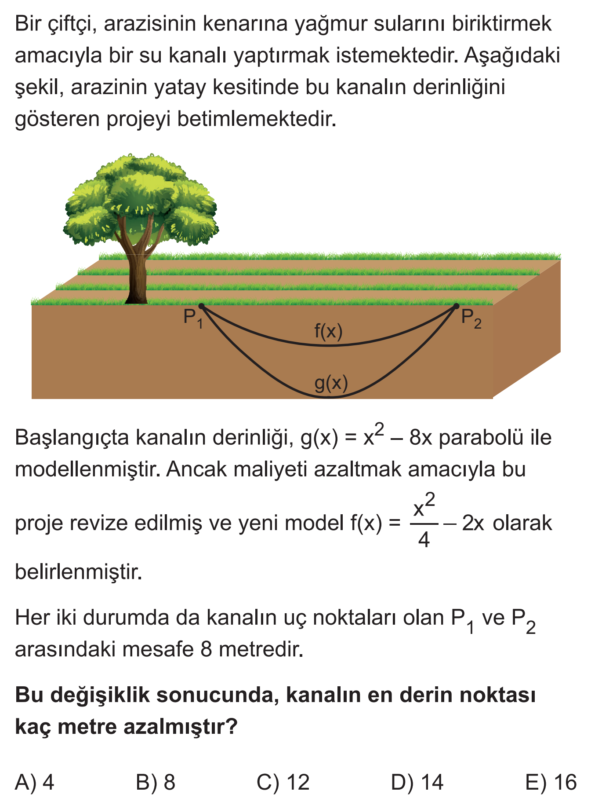
Çözüm
- $g(x)=x^2-8x=(x-4)^2-16$: en derin nokta $16$ m.
- $f(x)=\dfrac{x^2}4-2x=\dfrac14(x-4)^2-4$: en derin nokta $4$ m.
- Derinlik $16-4=12$ m azalmış (C).
Cevap: C
Soru 19Cevap: D
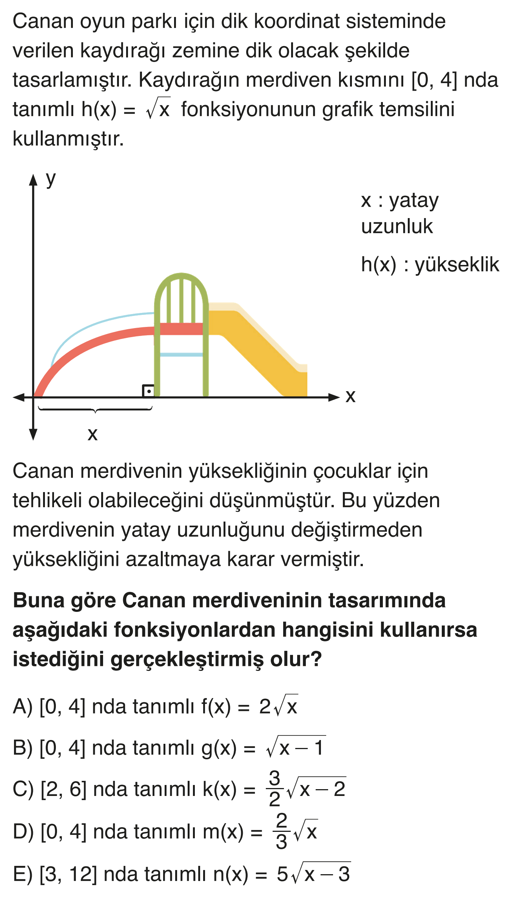
Çözüm
- Yatay uzunluk aynı kalmalı: tanım kümesi yine $[0,4]$ olmalı.
- Yükseklik azalmalı: $c\cdot\sqrt x$ biçiminde $0\lt c\lt1$ olmalı.
- $m(x)=\dfrac23\sqrt x$, $[0,4]$'te (D).
Cevap: D
Soru 20Cevap: E
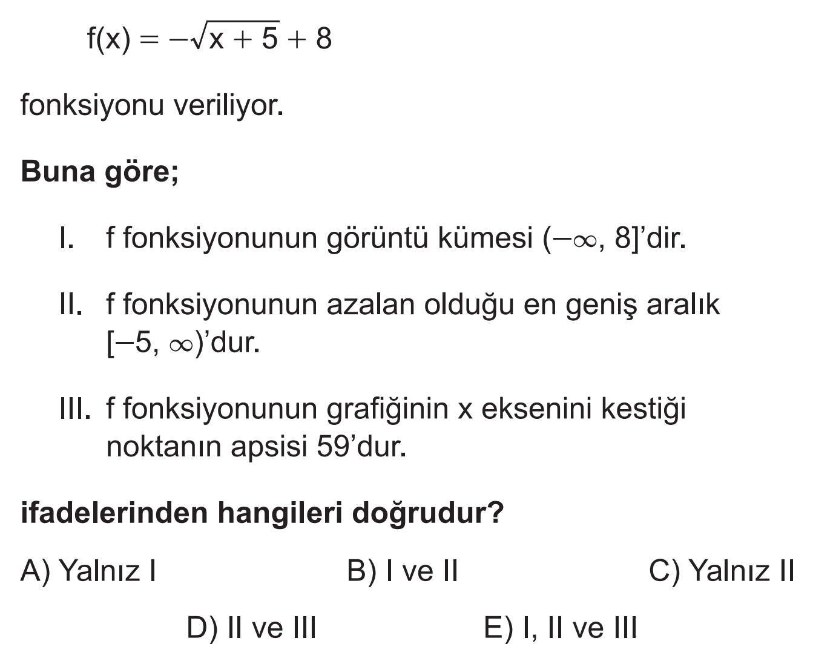
Çözüm
- $\sqrt{x+5}\ge0\Rightarrow f(x)\le8$: görüntü $(-\infty,8]$ (I).
- $-\sqrt{x+5}$ azalan; tanım kümesi $[-5,\infty)$ (II).
- $\sqrt{x+5}=8\Rightarrow x+5=64\Rightarrow x=59$ (III). Cevap E.
Cevap: E
Soru 21Cevap: B
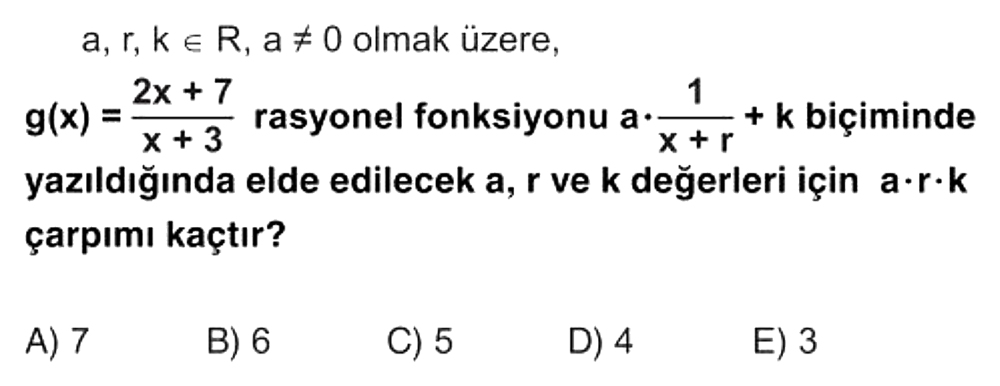
Çözüm
- $\dfrac{2x+7}{x+3}=\dfrac{2(x+3)+1}{x+3}$.
- $=2+\dfrac1{x+3}$: $a=1$, $r=3$, $k=2$.
- $a\cdot r\cdot k=6$ (B).
Cevap: B
Soru 22Cevap: D
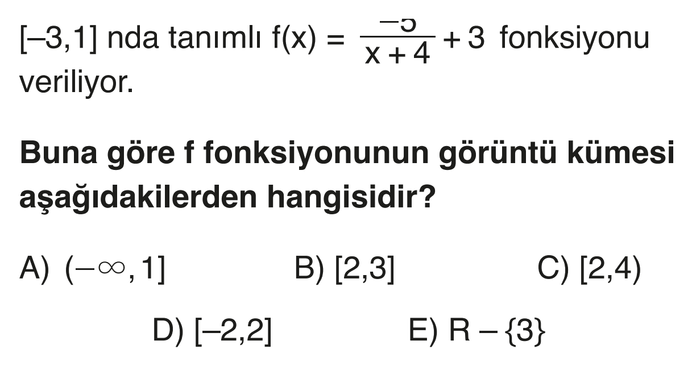
Çözüm
- $x\in[-3,1]\Rightarrow x+4\in[1,5]\Rightarrow\dfrac{-5}{x+4}\in[-5,-1]$.
- $f(x)\in[-5+3,\,-1+3]$.
- Görüntü $[-2,2]$ (D).
Cevap: D
Soru 23Cevap: E
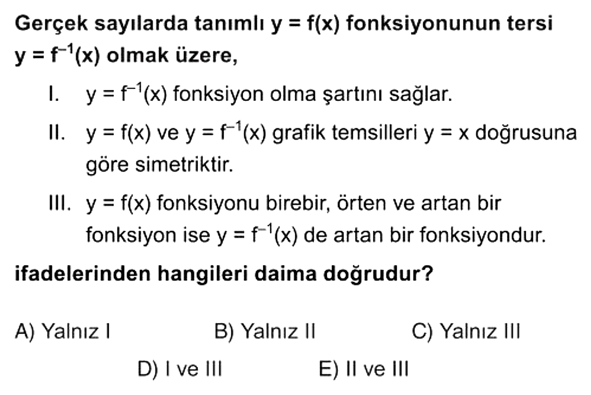
Çözüm
- Tersi alınan bağıntı her zaman fonksiyon olmaz: I daima doğru değildir.
- $(a,b)\in f\iff(b,a)\in f^{-1}$: grafikler $y=x$'e göre simetriktir (II).
- Artan bire bir örten fonksiyonun tersi de artandır (III). Cevap E.
Cevap: E
Soru 24Cevap: A
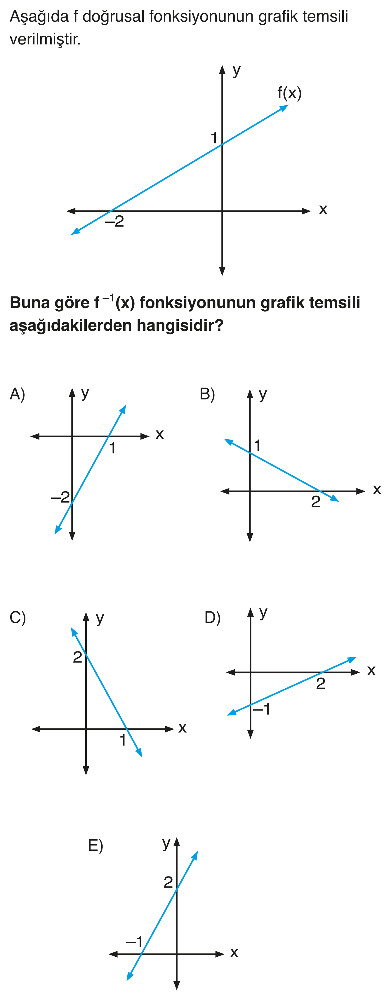
Çözüm
- $f$ grafiği $(-2,0)$ ve $(0,1)$'den geçer.
- $f^{-1}$ grafiği bu noktaların $y=x$'e göre simetriklerinden, $(0,-2)$ ve $(1,0)$'dan geçer.
- Bu iki noktadan geçen doğru A'dadır.
Cevap: A
Soru 25Cevap: D
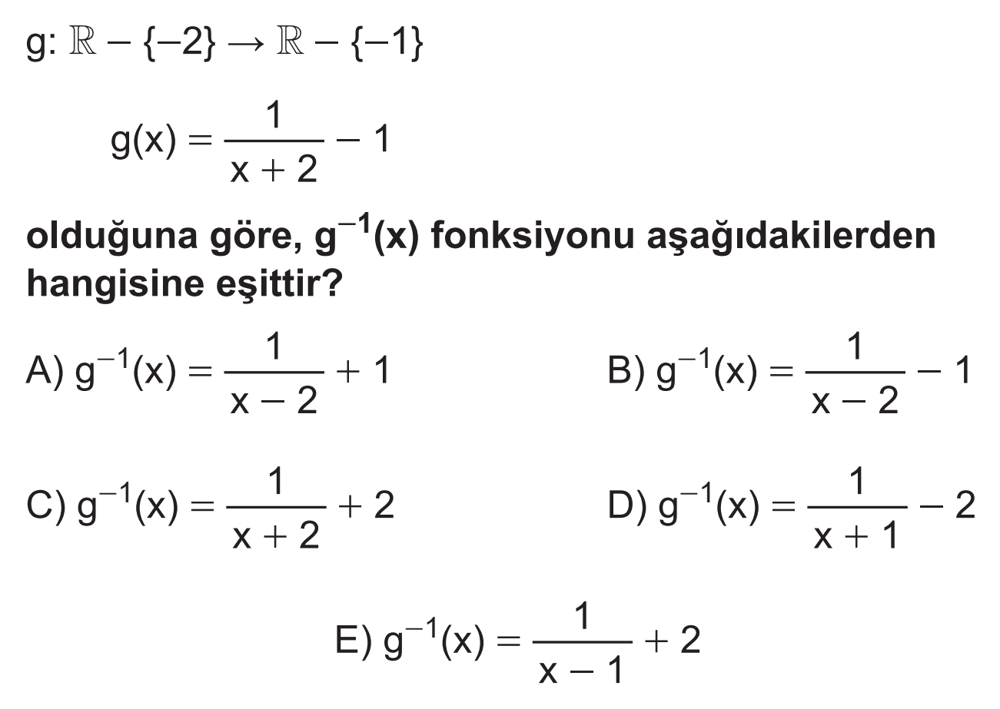
Çözüm
- $y=\dfrac1{x+2}-1\Rightarrow y+1=\dfrac1{x+2}$.
- $x+2=\dfrac1{y+1}\Rightarrow x=\dfrac1{y+1}-2$.
- $g^{-1}(x)=\dfrac1{x+1}-2$ (D).
Cevap: D
Soru 26Cevap: B
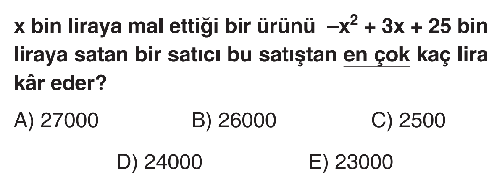
Çözüm
- Kâr $=-x^2+3x+25-x=-x^2+2x+25$.
- $=-(x-1)^2+26$.
- En çok $26$ bin = $26\,000$ TL (B).
Cevap: B
Soru 27Cevap: D
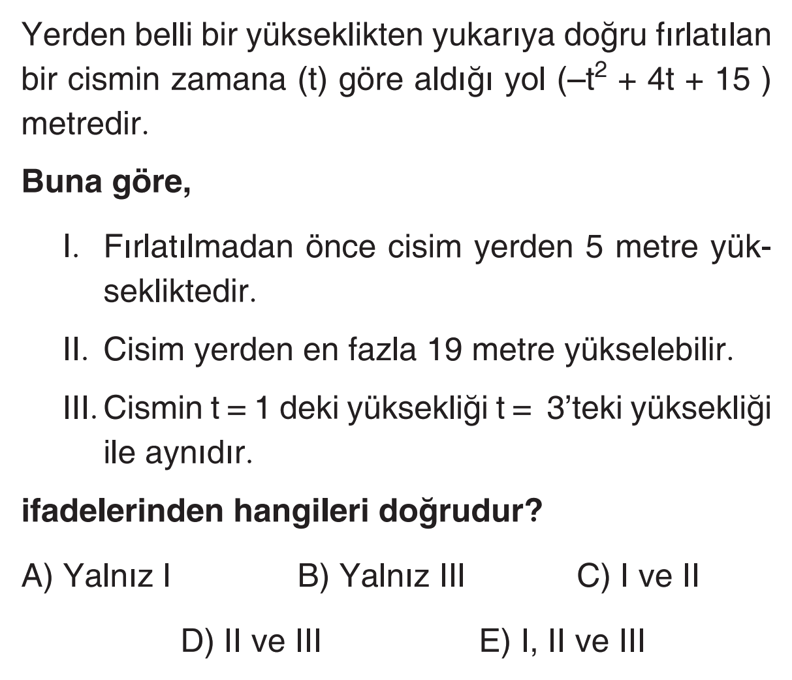
Çözüm
- $h(0)=15$: cisim $15$ m yükseklikten fırlatılmış (I yanlış).
- $-t^2+4t+15=-(t-2)^2+19$: en fazla $19$ m (II doğru).
- $h(1)=18=h(3)$ (simetri ekseni $t=2$) (III doğru). Cevap D.
Cevap: D
Soru 28Cevap: B
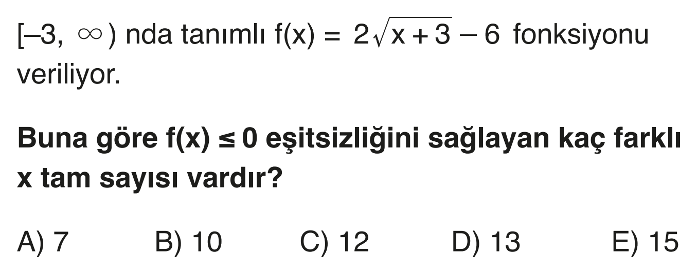
Çözüm
- $2\sqrt{x+3}-6\le0\Rightarrow\sqrt{x+3}\le3$.
- $0\le x+3\le9\Rightarrow-3\le x\le6$.
- Tam sayılar $-3,\dots,6$: $10$ tane (B).
Cevap: B
Soru 29Cevap: E
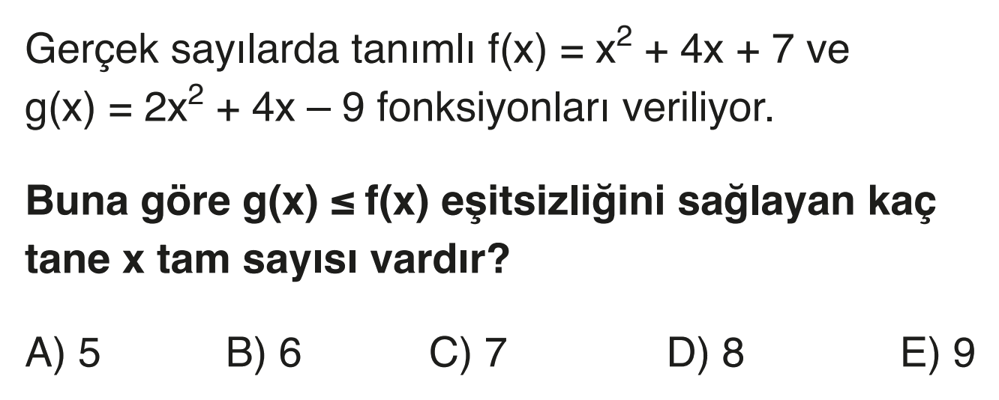
Çözüm
- $2x^2+4x-9\le x^2+4x+7\Rightarrow x^2\le16$.
- $-4\le x\le4$.
- Tam sayılar $-4,\dots,4$: $9$ tane (E).
Cevap: E
Soru 30Cevap: D
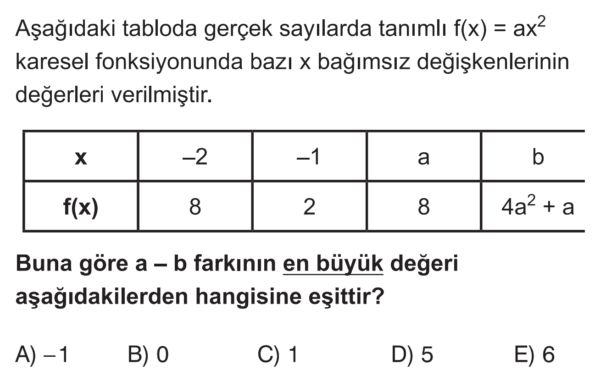
Çözüm
- $f(-2)=4a=8\Rightarrow$ katsayı $2$: $f(x)=2x^2$.
- $f(a)=2a^2=8\Rightarrow a=\pm2$. $a=2$ için $2b^2=18\Rightarrow b=\pm3$; $a=-2$ için $2b^2=14\Rightarrow b=\pm\sqrt7$.
- $a-b$ en büyük: $a=2$, $b=-3$ için $5$ (D).
Cevap: D